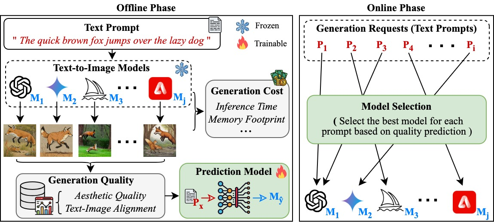
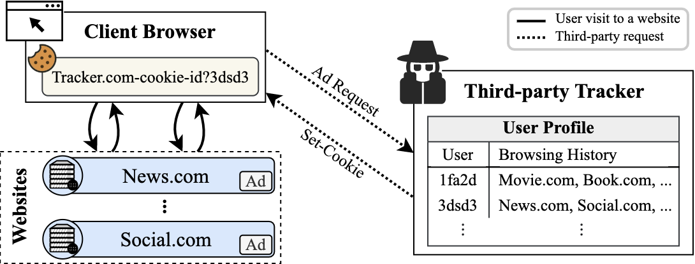
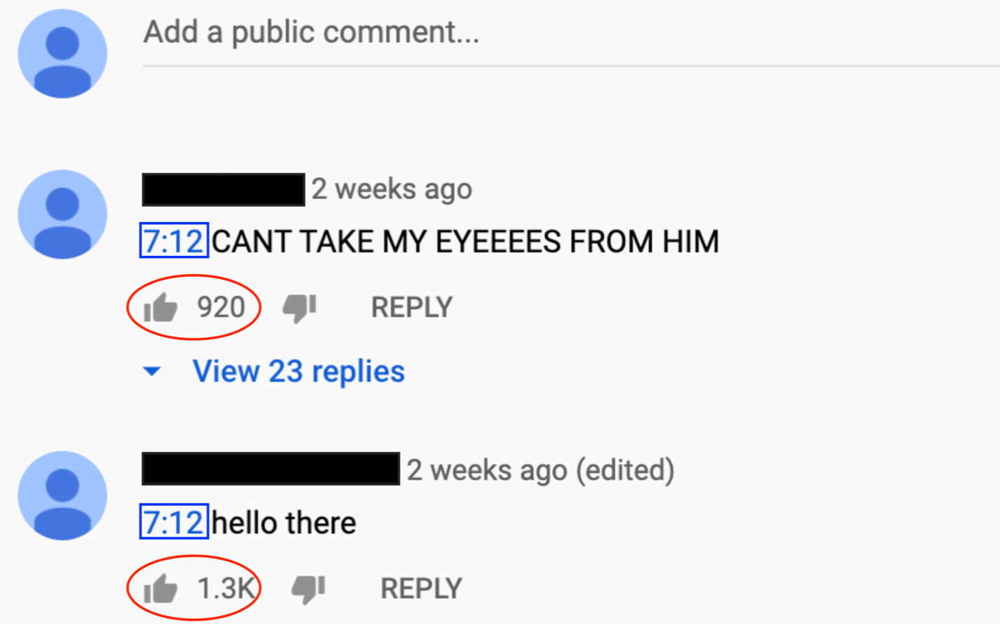

|
Dongkeun Lee
Hi! I am a cyber officer of ROK Army (Current rank: First lieutenant) working in R.O.K. Cyber Operations Command.
I am currently pursuing the Ph.D. degree in Cybersecurity at Korea University, advised by Prof. Wonjun Lee in Network and Security Research Lab. (NetLab).
My primary research interests lie in effectively and efficiently utilizing AI models for diverse usage, including multimedia applications and cybersecurity.
CV /
Email /
LinkedIn /
Google Scholar /
Github
|
|
|
Research Interests
-
Architectural Support for AI
- serverless, edge computing, inference serving, generative models
-
Cyber Security
- web security, data privacy, third-party tracking, encrypted traffic classification
|
Publications
|

|
Learning Prompt-Level Quality Variance for Cost-Effective Text-to-Image Generation
Dongkeun Lee and Wonjun Lee
CIKM '24, Boise, ID, USA, October 2024.
[ acm dl |
pdf |
code |
poster ]
(Short Paper, Acceptance Rate: 26.8%=141/527; BK21+ IF: 3-1=2)
|
|

|
Net-track: Generic Web Tracking Detection Using Packet Metadata
Dongkeun Lee, Minwoo Joo, and Wonjun Lee
WWW '23, Austin, TX, USA, April-May 2023.
[ acm dl |
pdf |
slides ]
(Acceptance Rate: 19.2%=365/1900; BK21+ IF: 4)
|
|

|
Qrator: An Interest-Aware Approach to ABR Streaming Based on User Engagement
Dongkeun Lee, Minwoo Joo, and Wonjun Lee
IEEE Systems Journal, Vol. 16, No. 4, pp. 6581 - 6589, December 2022.
[ ieee xplore ]
(2021 JCR I/F: 4.802; Top 25.36% Impact Factor in Engineering, Electrical & Electronic)
|
|
Education
-
Korea University, Seoul, Republic of Korea
(Sept. 2023 - Present)
- Ph.D. student in Cybersecurity, School of Cybersecurity (SCS)
- Academic advisor: Prof. Wonjun Lee
-
Korea University, Seoul, Republic of Korea
(Mar. 2018 - Feb. 2022)
- B.Eng. in Dept. of Cyber Defense (CYDF), Division of Information Security
- Overall GPA: 4.29/4.50
-
National University of Singapore
(Aug. 2019 - Dec. 2019)
|
Work Experience
-
R.O.K. Cyber Operations Command, Republic of Korea Armed Forces
(Aug. 2022 - Present)
- Cyber Officer, ROK Army
- Developed techniques for advanced cyberspace operations
- Managed cyber threats against military assets via malicious code analysis and traffic anomaly detection
-
Network and Security Research Lab at Korea University, Seoul, Republic of Korea
(Aug. 2020 - Mar. 2022)
- Research Intern (Supervisor: Prof. Wonjun Lee)
- Topic: Multimedia networking, Network security and privacy
|
Teaching Experience
-
Computer Networks, Teaching Assistant, Korea University, Seoul, Republic of Korea
(2021 Spring)
|
Research Projects
-
Enhancing the cost-effectiveness of text-to-image generation
(Jan. 2024 - Jun. 2024)
- Keywords: multimedia systems, text-to-image generation, diffusion models
- Analyzed the relationship between linguistic features of prompts and
generation quality across diverse text-to-image models including Stable Diffusion
- Proposed a cost-effective, quality-driven model selection approach that leverages the strengths
of multiple generative models and implemented it with PyTorch, achieved 29.25% cost reduction
- Conducted as part of the project: Service Continuity-Oriented Edge Continuum SW Framework
(Sco-Edge)
- Publications: CIKM '24
-
Discovering unknown third-party trackers in the wild
(Mar. 2021 - Jan. 2023)
- Keywords: web security, third-party tracking, encrypted traffic analysis, machine learning
- Built a high accuracy web tracking detection system, "Net-track"
- Collected 350k traffic traces by visiting top-20k Alexa websites using Selenium
- Implemented Net-track using Scikit-learn and Tensorflow,
achieved 0.94 accuracy and discovered new trackers yet unrecognized by existing flter lists
- Publications: WWW '23
-
Understanding the impact of user engagement on QoE in video streaming
(Oct. 2020 - Nov. 2021)
- Keywords: QoE, multimedia, ABR streaming, user modeling
- Collected and analyzed user comments in real YouTube videos with Selenium
- Validated the feasibility of obtaining user interest information from user engagement data
- Proposed "Qrator", the first ABR streaming system that leverages timestamps and likes in video comments
- Publications: IEEE Systems Journal '22
|
Publications (Domestic)
- Dongkeun Lee, Minwoo Joo, and Wonjun Lee, "Network-level Tracker Detection Using Features of Encrypted Traffic (암호화된 트래픽의 특성을 활용한 네트워크 단위 트래커 탐지 기법)," Journal of KIISE: Information Networking, Vol. 49. No. 4, pp. 314-320, April 2022. (Selected as an Outstanding Paper Award)
- Dongkeun Lee, Minwoo Joo, and Wonjun Lee, "Feature Analysis of Encrypted Traffic for Network-level Tracker Detection (네트워크 단위 트래커 탐지를 위한 암호화된 트래픽의 특성 분석)," in Proceedings of the KIISE Korea Computer Congress 2021 (KIISE KCC2021), Jeju, Republic of Korea, June 2021, pp. 1-3. (Selected as an Outstanding Paper Award)
- Dongkeun Lee, Minwoo Joo, and Wonjun Lee, "User Engagement Based Adaptive Streaming Using Timestamps in Video Comments (비디오 댓글의 타임스탬프를 활용한 사용자 참여 기반 적응적 스트리밍 기법 연구)," in Proceedings of the KIISE Korea Software Congress 2020 (KIISE KSC2020), Pyeongchang, Republic of Korea, December 2020, pp. 1-3.
|
Honors and Awards
-
Scholarships
- The National Scholarship for Science and Engineering (Mar. 2018 - Feb. 2022)
- Korea Student Aid Foundation (KOSAF)
- Full tuition during undergraduate years (about $10K/year in total)
- Military Scholarship (Mar. 2018 - Feb. 2022)
- Ministry of National Defense, Republic of Korea
- Full tuition during undergraduate years (about $10K/year in total)
-
Awards
- Outstanding Paper Award, Journal of KIISE: Information Networking, KIISE, June 2023
(Paper Title: Network-level Tracker Detection Using Features of Encrypted Traffic / 암호화된 트래픽의 특성을 활용한 네트워크 단위 트래커 탐지 기법)
- Outstanding Paper Award, Korea Computer Congress 2021, KIISE, June 2021
(Paper Title: Feature Analysis of Encrypted Traffic for Network-level Tracker Detection / 네트워크 단위 트래커 탐지를 위한 암호화된 트래픽의 특성 분석)
|
Travels and Talks (You may have seen me in one of these venues!)
- 2024.12.02-12.06: Middleware 2024, Hong Kong, China
- 2024.10.21-10.25: CIKM 2024, Boise, ID, USA (Author)
- 2023.12.01-12.04: ICDM 2023, Shanghai, China
- 2023.11.03-11.04: KDBC 2023, Busan, Korea
- 2023.06.18-06.20: KCC 2023, Jeju Island, Korea (Invited Speaker @ Top Conference Session)
- 2023.04.30-05.04: WWW 2023, Austin, TX, USA (Author)
|
Languages
- English (Fluent), Korean (Native), Chinese (Beginner)
|
Template
|
|
Last Update: December 2024
|